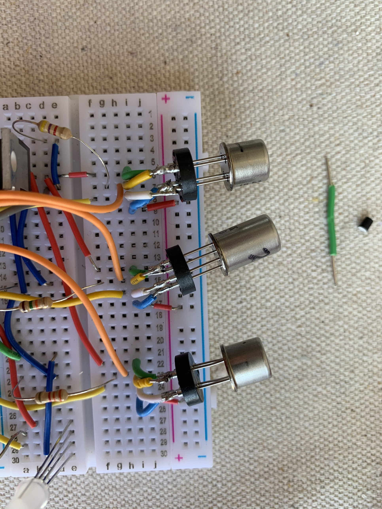

Detecting target VOCs for indoor air quality monitoring, with source classification via principal component analysis.

Developed systems to detect target VOCs for indoor air quality monitoring and analyzed sensor data using principal component analysis for source classification.
This work, led by Yan-Ting Chen, applied PCA to sensor-array data to distinguish between different indoor pollutant sources for smart home monitoring applications, and was later extended into a prototype "electronic nose" embedded system for ambient VOC monitoring. A related effort in the same lab air-quality line looked at outdoor air quality and smog monitoring. The underlying VOC sensor technology is covered by an earlier U.S. patent.